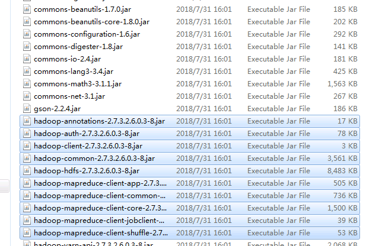
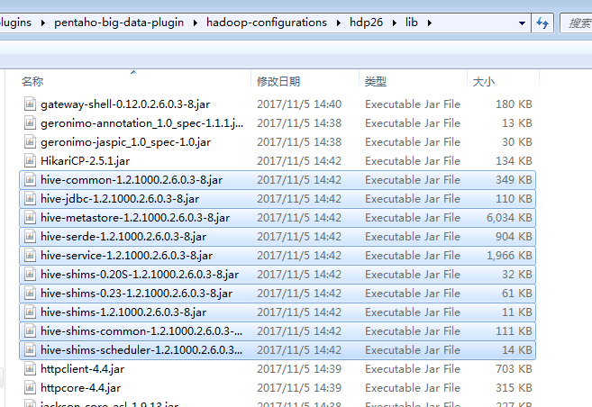
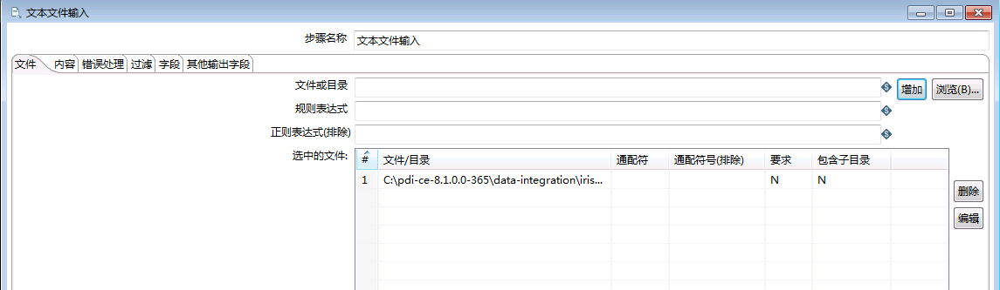
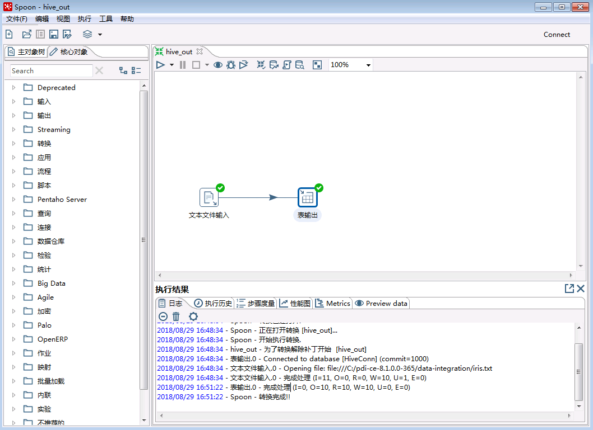
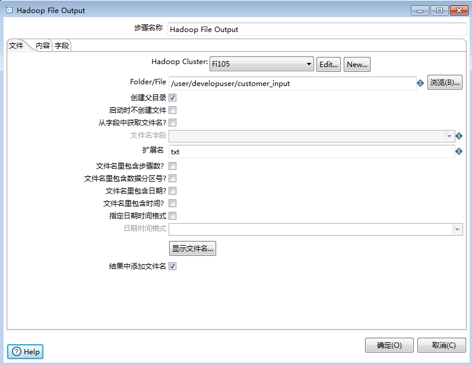
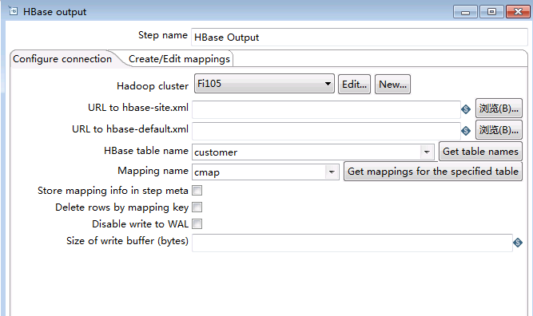
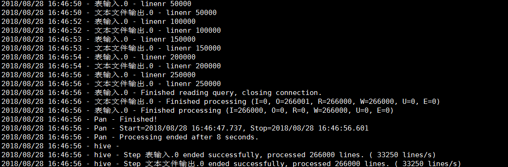

Kettle对接FusionInsight¶
适用场景¶
Kettle 8.0.0 ↔ FusionInsight HD V100R002C80SPC200 (HDFS/HBase/Hive)
Kettle 8.1.0 ↔ FusionInsight HD V100R002C80SPC200 (HDFS/HBase/Hive)
说明：Kettle 8.1.0仅限POC使用
Windows平台¶
环境准备¶
- 安装JDK8

-
配置系统环境变量
JAVA_HOME= C:\\Program Files\\Java\\jdk1.8.0_112
-
在PATH环境变量添加
%JAVA_HOME%\bin;%JAVA_HOME%\jre\bin; -
获取Kerberos配置文件
-
在FI管理界面下载集群用户的认证凭据，例如用户为
developuser; -
解压后得到Kerberos配置文件krb5.conf和用户密钥文件user.keytab
-
将krb5.conf文件后缀名修改为ini,将krb5.ini文件复制到
C:\Windows目录下.
配置并启动Kettle¶
- 软件获取 打开以下地址[https://github.com/pentaho/pentaho-kettle/tree/8.0] (https://github.com/pentaho/pentaho-kettle/tree/8.0), 选择DownloadZip下载Kettle8.0版本

- 解压得到pdi-ce-8.0.0.0-28;
- 获取FusionInsight的适配包文件
pentaho-hadoop-shims-hdp26-8.1.0.0-SNAPSHOT.jar和pentaho-hadoop-shims-hdp26-hbase-comparators-8.1.0.0-SNAPSHOT.jar,替换目录\data-integration\plugins\pentaho-big-data-plugin\hadoop-configurations\hdp26\下的原有文件; - 替换hdp26\lib目录下Hive相关的jar包以及hdp26\lib\client目录下hdfs相关的jar包


并添加以下两个包

-
获取FusionInsightHD客户端配置文件
-
下载FusionInsightHD客户端并解压
-
解压后，进入HDFS，Hive，Hbase等组件的config目录，找到如下的配置文件，复制到Fi28适配包的文件夹里;

修改core-site.xml文件中以下字段：
<name>fs.defaultFS</name> <value>hdfs://hacluster</value>
-
获取用户keytab文件及配置
-
在FI管理界面下载用户的keytab文件到本地
-
修改Fi28适配包中
config.properties文件:pentaho.authentication.default.kerberos.keytabLocation=C:/kerberos/user.keytabpentaho.authentication.default.kerberos.conf=C:/kerberos/krb5.confpentaho.authentication.default.kerberos.principal=developuser@HADOOP.COM -
启动kettle
-
Windows平台
双击data-integration目录下的Spoon.bat,进入界面后，在上方菜单栏选择工具->Hadoop Distribution,选择
HortonWorks HDP 2.6.x
对接Hive¶
创建Hive连接¶
-
选择 文件 -> 新建 -> 转换
-
点击 主对象树 页签，在页签中选择 转换 -> DB连接，右键选择 新建
-
为连接命名，连接类型选择Hive 2，填写主机名、端口号、数据库名

- 点击左侧 选项，填写以下参数：

- 点击测试，显示以下窗口，表明测试成功

- 连接测试成功后，点击 确认 保存连接
读取Hive数据¶
- 添加转换步骤
在 核心对象 页签下，拖动 表输入 和 文本文件输出 两个步骤到工作区，并连接这两个步骤;

- 修改Hive表输入配置
双击 表输入 步骤， 数据库连接 选择前面创建的hive连接，点击 获取SQL查询语句 ，选择需要导入的hive表

选择是,该表的字段将会包含在SQL语句中，

可以点击预览，并选择行数，预览Hive表中的数据
- 修改文本文件输出配置
在文件选项卡中，设置输出文件名称，扩展名：

在内容选项卡中，设置文件输出时属性

在字段选项卡中，点击获取字段，获得文件字段内容，可以点击最小宽度,使字段宽度最小

点击确定,保存设置。
- 运行转换，在主界面点击工具栏左侧的三角形运行按钮

执行结果：

写入Hive数据¶
以本地文本文件 -> hive为例
-
新建转换，保存为hive_out.ktr
-
添加转换步骤，将文本文件输入和表输出两个步骤拖入工作区，连接两个步骤;

- 双击文本文件输入，在文件选项卡中，点击
浏览，选择需要上传的本地文件，点击添加，文件被添加至下方选中的文件;

在内容选项卡中，设置文件类型、分隔符、限定符、编码等等

在字段选项卡中，点击获取字段，获得字段后，可以点击Minimal Width使字段宽度最小

点击确定,保存配置。
- 双击表输出，参考上面章节创建hive连接
设置目标表，该表需要已经在Hive中创建好，并且字段与本地文件保持一致;

- 运行转换
保存配置，点击 执行 按钮，
执行结果：向Hive表写入10条数据，用时2min+

查看Hive表数据：

说明：向Hive表中写入数据，每插入一条数据会起一个MR任务，所以效率特别低，不推荐用这种方式，可以将数据写入HDFS文件之后再载入Hive表
对接HDFS¶
创建Hadoop Cluster¶
-
选择 文件 -> 新建 -> 转换，点击 主对象树 页签，在 Hadoop Clusters 右键选择 New Cluster
-
HDFS的Hostname填写hacluster;
- JobTracker的Hostname 填写 Yarn ResourceManager主节点的IP，端口号是21066,如果ResourceManager发生主备切换，需要修改IP;
- ZooKeeper的Hostname 填写ZooKeeper的主节点IP，端口号是24002，如果ResourceManager发生主备切换，需要修改IP;
- Oozie的URL填写oozie WebUI的地址.

点击 测试

导入HDFS文件¶
以本地文件 -> HDFS为例
- 添加转换步骤
在 核心对象 页签下，拖动 输入 -> 文本文件输入 ，和 Big Data -> Hadoop File Output 两个步骤到工作区，并连接这两个步骤。

-
文本文件输入配置参考上面章节配置
-
修改Hadoop File Output配置
双击 Hadoop File Output 步骤，在 文件 页签下，Hadoop Cluster 选择前面创建的集群，Folder/File 选择hdfs目录，文件名可以任意指定

- 点击 内容 页签，设置分隔符，勾选 快速数据存储（无格式）（否则保存的文件中会按字段长度填充空格）

- 点击 字段 页签，获取字段，并设置最小宽度

- 运行转换
保存配置，点击 执行 按钮。
- 执行结果：

查看HDFS文件

读取HDFS文件¶
以HDFS -> Excel为例
-
新建转换，保存为hdfs2excel.ktr
-
添加转换步骤
在 核心对象 页签下，拖动 Big Data -> Hadoop File Input 和 输出 -> Microsoft Excel 输出，两个步骤到工作区，并连接这两个步骤。

- 修改 Hadoop File Input配置
双击 Hadoop File Input 步骤，文件 页签，选择待导出的文件，文件类型支持CSV（txt也可以）和Fixed（固定列宽）

点击 内容 页签，选择文件类型、分隔符、编码方式等

点击 字段 页签，获取字段

点击 确定 按钮，保存配置
- 修改Microsoft Excel输出配置
双击 Microsoft Excel 输出 步骤，选择文件保存位置和文件名

点击 字段 页签，获取字段

- 运行转换
保存配置，点击 执行 按钮，启动转换
- 执行结果

- 查看导出的excel文件

对接HBase¶
导入HBASE文件¶
以本地文件 -> HBase为例
- 添加转换步骤
在 核心对象 页签下，拖动 输入 -> 文本文件输入 ，和 Big Data -> HBase Output 两个步骤到工作区，并连接这两个步骤。

-
文本文件输入配置参考上面章节配置，注意在集群HBase中要有和导入的表相同的空表，指明字段和列簇.
-
修改 HBase Output 配置
双击 HBase Output 步骤，在 Configure connection 页签下，选择已经配置好的Hadoop集群，点击Get table name，获取要输出的表,点击Get mapping for specified table获取该表对应的mapping.

- 若该表没有创建mapping,在 Create/Edit Mappings 页签创建mapping,指定各项属性

点击 确定 ，保存配置
- 运行转换
保存配置，点击 执行 按钮,启动转换
- 执行结果：

查看集群中的HBase文件
执行
hbase shell count 'customer'

读取HBASE文件¶
以HBase -> 文本文件为例
-
新建转换，保存为hbase.ktr
-
添加转换步骤
在 核心对象 页签下，拖动 Big Data -> HBase Input 和 输出 -> 文本文件输出，两个步骤到工作区，并连接这两个步骤。

- 修改 HBase Input配置
双击 HBase Input 步骤，在 Configure query 页签，选择已经连接好的Hadoop集群，若无已经连接的集群，点击new,参照上面章节Hadoop集群配置，配置连接集群;

在 Create/Edit Mappings 页签，点击Get table names,获取集群中的Hbase表，选择要读取的表，在Mapping name下拉选择与该表关联的map，若没有，自定义一个map的名字，填写字段和列簇，并指定字段是否为key，字段类型.

回到 Configure query 页签,点击Get mapped table names,选择要读取的表，点击Get mappings for the specified table获取该表对应的mapping，点击右下角Get Key/Feilds Info，获取对应的表的信息.

点击 确定 按钮，保存配置
- 修改文本文件输出配置
双击 文本文件输出 步骤，在 文件 页签，填写文件名和扩展名;

点击 字段 页签，点击获取字段,设置最小宽度(可选)

点击 确定 按钮，保存配置
- 运行转换
保存配置，点击 执行 按钮，启动转换
- 执行结果

- 查看导出的文件

Linux平台¶
环境准备¶
-
安装操作系统
-
安装RedHat 6.5
-
禁用防火墙，SELinux
-
添加本地主机名解析
-
使用
vi /etc/hosts添加本地主机名解析节点IP host1 节点IP host2 节点IP host3
若是桌面版操作系统，Kettle对接参照上面章节Windows系统下的对接方式.
-
参考上面章节，在有图形界面的操作系统下，配置好Kettle与Fi集群的连接，测试连通性,将Kettle的
data-integration目录以及其下所有文件上传至Linux系统的opt目录下. -
安装FusionInsight HD客户端
-
下载完整客户端，安装至目录
/opt/hadoopclient -
使用
vi /etc/profile编辑以下内容插入到文件末尾source /opt/hadoopclient/bigdata_env
-
将krb5.conf放在/etc目录下
cp /opt/hadoopclient/KrbClient/kerberos/var/krb5kdc/krb5.conf /etc/
Hive对接¶
导出Hive表¶
以Hive->文本文件为例
-
在有图形界面的操作系统中，新建一个转换，在工作区中放入
表输入和文本文件输出，保存为hive.ktr; -
点击
表输入，参考上面章节中关于Hive连接的配置，只需修改连接选项中user.keytab文件所在路径，修改为/etc/user.keytab

-
将hive.ktr转换文件上传至Linux系统下Kettle的
data-integration文件夹下， -
根据Kettle版本执行以下命令
cd /opt/data-integration/
对于Kettle-8.0版本,执行以下脚本清除cache（参见FAQ1）
sed -i "s/^org.pentaho\.clean\.karaf\.cache=false/org\.pentaho\.clean\.karaf\.cache=true/g" /opt/data-integration/system/karaf/etc/custom.properties
可将其保存为脚本文件，每次执行命令前先执行该脚本
然后执行以下命令，运行程序
./kitchen.sh -file=hive.ktr
对于Kettle-8.1版本,手动删除
/data-integration/system/karaf/caches/pan/data-1目录下的cache文件 然后执行以下命令，运行程序* 执行结果如下./pan.sh -file=hive.ktr

-
导出的表在
data-integration/目录下
上传文件至Hive¶
- 同Windows操作系统下创建ktr文件操作，在选择需要上传的文件时，修改本地文件的路径，在Hive连接选项配置修改中
user.keytab文件的路径为/etc/user.keytab即可，将ktr文件置于Linux系统中data-integration文件夹下，执行命令同上小节中操作。
HDFS & HBase文件输出¶
-
将上面章节创建的ktr转换文件上传至Linux系统下Kettle的
data-integration文件夹下，根据Kettle版本执行命令(同hive)即可 -
执行结果如下

- 导出的表在
data-integration/目录下
上传文件至HDFS & HBase¶
同上传文件至Hive操作，修改本地文件路径即可。
FAQ¶
-
1.在Linux系统中，每执行一次转换或者任务，Kettle都会生成一些Cache文件，在执行下一次转换/任务之前，需要清除这些Cache，否在HDFS Hive 和HBase进行连接传输时会出错